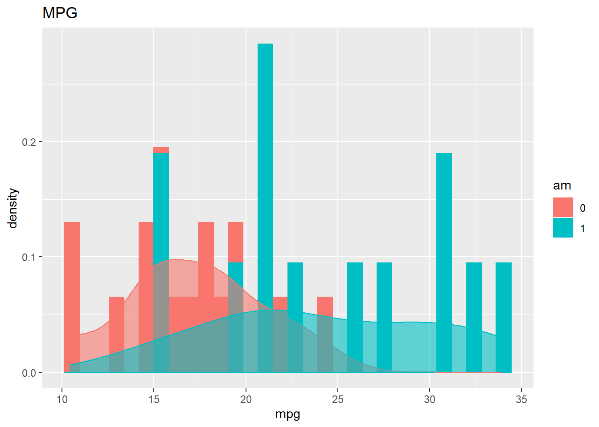

library(tidyverse)
data("mtcars")AE 01: MTCars
Application exercise
These data were extracted from the 1974 Motor Trend US magazine, and comprises fuel consumption and 10 aspects of automobile design and performance for 32 automobiles (1973–74 models).
To learn more about the data, see here: https://www.rdocumentation.org/packages/datasets/versions/3.6.2/topics/mtcars
- Create a code chunk and run the summary command on the variable mpg.
summary(mtcars$mpg) Min. 1st Qu. Median Mean 3rd Qu. Max.
10.40 15.43 19.20 20.09 22.80 33.90 - Fill in the following code (replace the … below) to create a histogram of mpg from question 1.
ggplot(mtcars, aes(x= mpg)) + geom_histogram()
Did it work? If not, you may need to library the ggplot2 package. do that in the code above!
- That histogram is really boring…. fill in your same x and give it an informative title by filling the ” ” below.
ggplot(mtcars, aes(x= mpg)) + geom_histogram() + labs(title="Histogram of mpg")
- Let’s explore if cars with or without a transmission get better mpg. Put am in the space for color and fill and run the code. Continue to put your variable in x = and write out a title.
mtcars$am <- as.factor(mtcars$am) #This makes sure am is a factor
ggplot(mtcars, aes(x= mpg, color = am , fill = am )) + geom_histogram(binwidth = 1) + labs(title="Histogram of mpg by transmission")
- Let’s add a density curve. Run the following code below. Play around with alpha and see how the graph changes.
ggplot(mtcars, aes(x= mpg , color = am , fill = am )) + geom_histogram(aes(y=..density..), position="identity") + labs(title="MPG") +
geom_density(alpha=0.6)
- Let’s rip the histogram apart and seperate by the variable am. Fill in your quantitative variable in x = and put your transmission variable in the … after facet_grid.
ggplot(mtcars, aes(x= mpg))+
geom_histogram(color="black", fill="white")+
facet_grid(~am)
- For additional practice with the MT data set, please click here
STA 199 - AE 01: MTCars STA 199